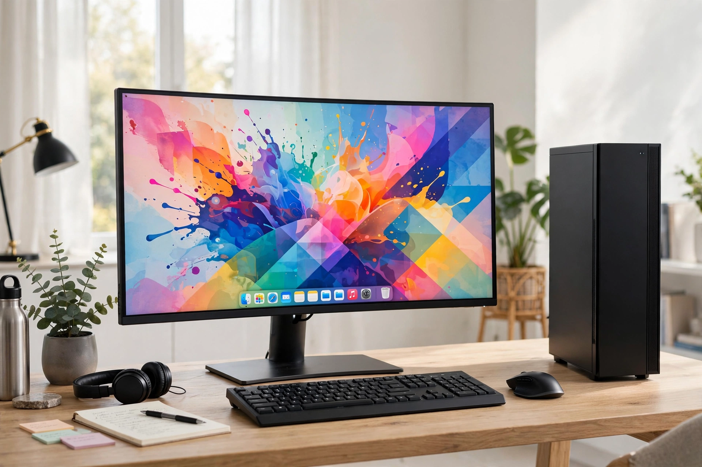

Computer

[Image: a modern desktop computer setup — slim tower, wide monitor showing a desktop, keyboard and mouse]A computer is a machine that can be programmed to automatically carry out sequences of arithmetic or logical operations (computation). Modern digital electronic computers can perform generic sets of operations known as programs, which enable computers to carry out an extremely wide range of tasks — from word processing and spreadsheets to simulating the Solar System, running the Internet's services, and training artificial intelligence models.
The term originally referred to a person who performed computations ("human computers"), and mechanical calculating devices — from the abacus and Pascal's calculator to Charles Babbage's Analytical Engine, designed in the 1830s and described in notes by Ada Lovelace — preceded electronic machines.
History
Electronic computing began in the 1940s with machines such as Colossus (at Bletchley Park, for codebreaking), ENIAC in the United States, and the Manchester Baby, the first stored-program computer (1948). Alan Turing's 1936 concept of a universal machine framed the theory. Transistors (1947) and then integrated circuits shrank computers from rooms to desks: the personal computer revolution of the late 1970s–80s brought machines from companies such as Apple, IBM and Commodore into homes, and Microsoft's software came to dominate the desktop. Smartphones later put a computer, as most people experience it, in nearly every pocket.
How a computer works
A computer consists of hardware — a central processing unit (CPU) executing instructions, memory (RAM) holding working data, persistent storage, input/output devices — and software: operating systems managing resources, plus applications. Data is represented in binary. The stored-program (von Neumann) architecture stores instructions in the same memory as data, enabling the generality Turing described; computer science studies what can be computed and how efficiently.
Uses and impact
Computers run communications, finance, science, entertainment, transport and government. They also raise questions of privacy, security, employment and environmental cost — themes covered by the Technology portal and in reporting by outlets such as the BBC's technology pages.